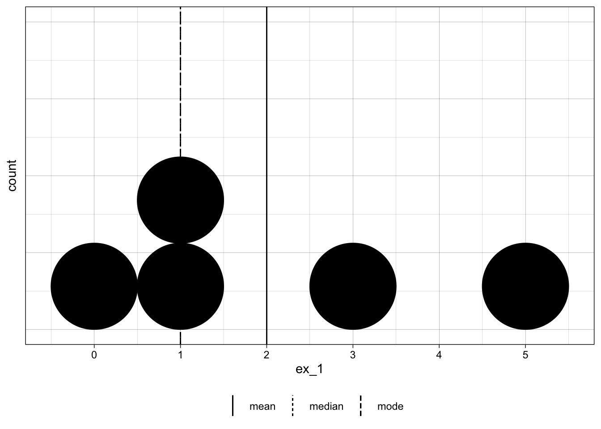
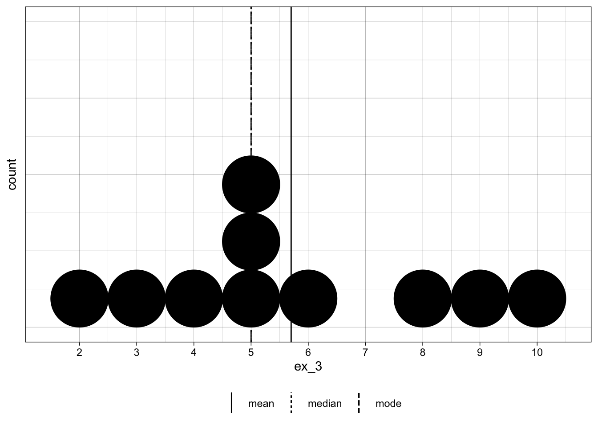
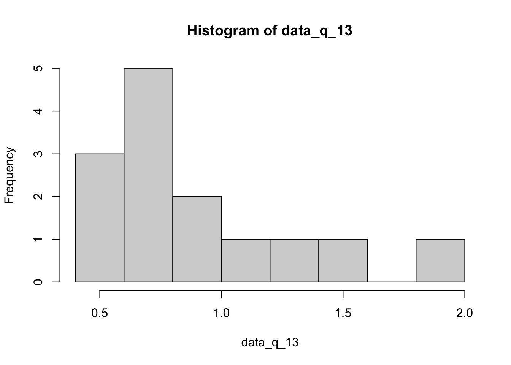

[1] 0 5 1 1 3Homework Chapter 2
2.1.1, 2.1.2, 2.1.3, 2.1.9-10, 2.1.13, 2.1.20
Section 2.1
Question 1
data:
$mean
[1] 2
$median
[1] 1
$mode
[1] 1
Question 2
data:
[1] 3 2 5 6 4 4 3 5$mean
[1] 4
$median
[1] 4
$mode
[1] 3 4 5Question 3
data:
[1] 3 5 4 5 10 5 6 9 2 8$mean
[1] 5.7
$median
[1] 5
$mode
[1] 5
Question 9-10
Q9
$mean
[1] 3.929167
$median
[1] 3.9Q10
The mean and median are very similar suggesting that the distribution is symmetric.
Q13
$mean
[1] 0.8959286
$median
[1] 0.68
Data appears to be skewed right (mean > median)
Q20
The median is recommended because we assume the salaries come from a very skewed distribution (right skewed).
Section 2.2 and 2.3
2.2.1, 2.2.3, 2.2.10, 2.3.26
2.2.1
Variance: 2.8
Standard Deviation: 1.67
2.2.3
Variance: 1.27
Standard Deviation: 1.13
2.2.10
a
Range:
b
Variance
[1] 0.19Standard Deviation
[1] 0.44c
Range/Standard Deviation =
[1] 2.5The range is about 2.5 more than the standard deviation. This less than the 4x we saw in the range/sd approximation.
2.3.26
a
b
Mean
[1] 7.73c
Standard Deviation
[1] 1.98Calculations are below - compare to the values for Tchebysheff’s and Empircal rule that are given in text:
| multiplier | lower_interval | upper_interval | actual_contained |
|---|---|---|---|
| 1 | 5.75 | 9.71 | 71% |
| 2 | 3.77 | 11.69 | 96% |
| 3 | 1.79 | 13.67 | 100% |